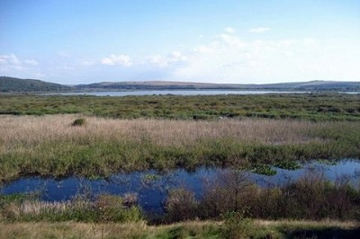
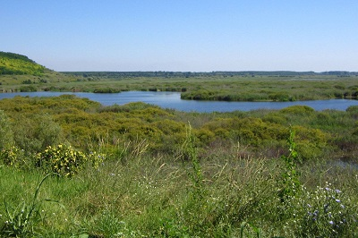
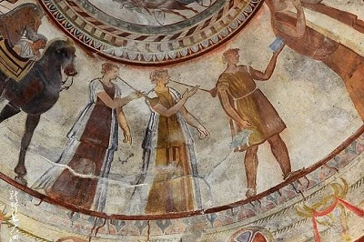
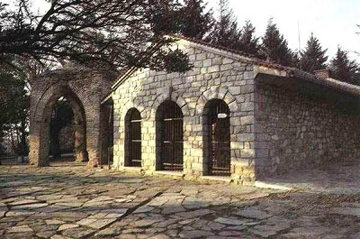
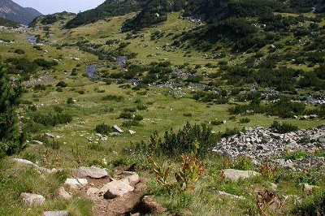
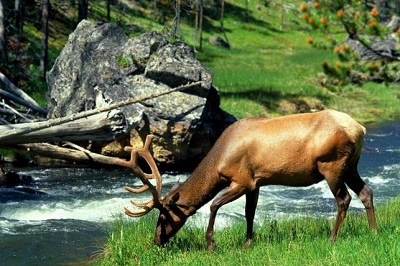
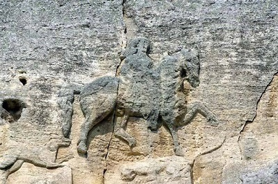
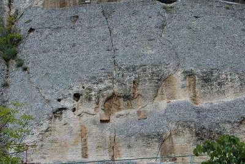

morly旅游网
保加利亚共和国（保加利亚语：Народна република България），简称保加利亚。是欧洲东南部巴尔干半岛东南部的一个国家，与罗马尼亚、塞尔维亚、马其顿、希腊和土耳其接壤，东部滨临黑海。
保加利亚国土面积为110994平方公里。2015年，人口总量为715.37万人。1990年2月27日，将3月3日摆脱奥斯曼帝国统治的纪念日定为国庆日。1990年11月15日，保加利亚改国名为保加利亚共和国。1991年7月12日通过的宪法规定，定为议会制国家。
保加利亚人的祖先来自中亚， [2] 公元395年并入拜占庭帝国，681年建立斯拉夫保加利亚王国（保加利亚第一王国），1018年被拜占庭再度侵占，1185年建立保加利亚第二王国， [1] 1396年被奥斯曼帝国吞并，1878年独立，1946年成立保加利亚人民共和国，东欧剧变后确立资本主义政治制度。
保加利亚位于欧洲巴尔干半岛东南部。北面与罗马尼亚接壤（多瑙河当边界），东南面毗邻土耳其和西南面保加利亚行政区划希腊，西北面邻接塞尔维亚（以前南斯拉夫的成员国）和西南面毗邻马其顿（以前南斯拉夫的成员国），东濒黑海。面积111001.9平方公里，海岸线长378公里。多瑙河是保加利亚与罗马尼亚的界河。
斯雷伯尔纳自然保护区
斯雷伯尔纳自然保护区是保加利亚东北部广大极需保护地区中的唯一一块陆地自然保护区，是乌克兰--哈萨克生物省的植物区。芦苇群落中的植物有禾本科群落，这种植物占据了保护区2/3的面积，形成了一道沿湖天然屏障，此外还有水百合和一些稀有的湿地植物。这里共有大约67种植物，其中几种在欧洲很少见。
 斯韦什塔里的色雷斯古墓
色雷斯古墓：是保加利亚古代色雷斯墓葬。它位于保加利亚中部巴尔干山脚下的“玫瑰谷”中的卡赞利克城城边。卡赞利克城是在中世纪的克伦要塞的基础上发展而成的，以盛产香料闻名，被誉为保加利亚的“玫瑰谷之都”。同时，这里也是古代色雷斯文化的中心，有大量的色雷斯文物出土，其中就以 1944年发现的这座公元前 4 世纪的色雷斯古墓最为著名。
 皮林国家公园
皮林国家公园位于保加利亚西南部的皮林山区，占地面积27,40公顷，海拔在1,008米到2,914米之间。皮林国家公园是石灰巴尔干地貌，内有湖泊、瀑布、洞穴和松树林。约70个冰川泊分布于崇山峻岭之间，那里栖息有成百上千种当地的珍稀种，其中很多是巴尔干更新世时期植物的典型代表。此外，里的山峰各有特色，具有极高的美学价值。
 马达拉骑士浮雕
维托沙山位于索非亚以南812公里处史料记载它最早称“斯科帕尔”意为“峭山”。保加利亚独立后改名为“维托沙”总面积278平方公里。“黑峰”为最高峰2285米因终年搏击天际乌云而得名。古代这里为橡树茂密、人迹罕见的山区十七世纪开始开发1934年被辟为公园。 亚历山大·涅夫斯基大教堂巴尔干半岛最大的东正教教堂位于索非亚市中心同名广场上。它是为1877年1878年俄土战争俄军“解放”保加利亚而建。教堂以俄国沙皇亚历山大二世为名。
 内容整理至网络，如有侵权，请联系我们！1255394075@qq.com